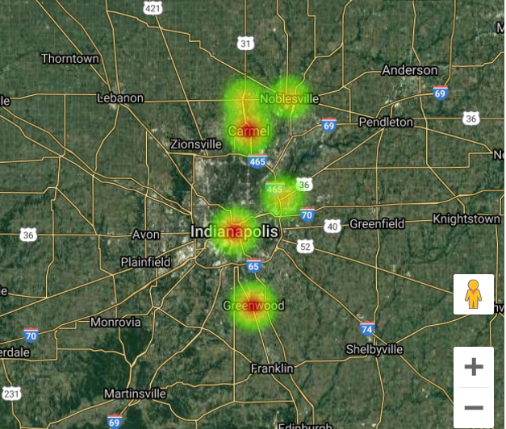
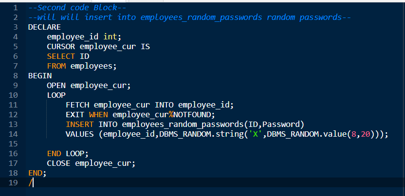
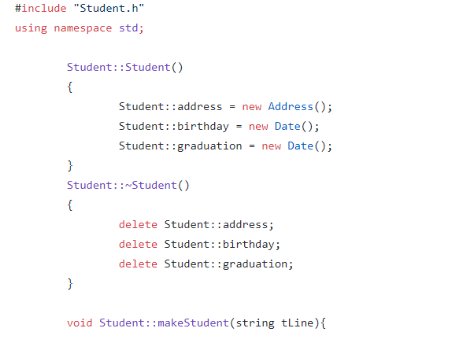
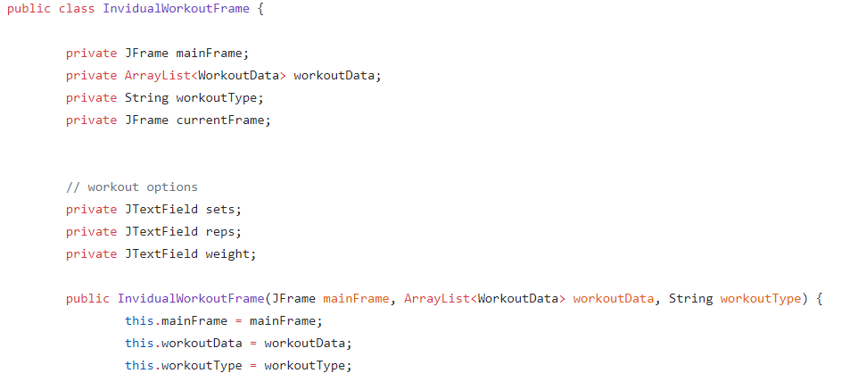
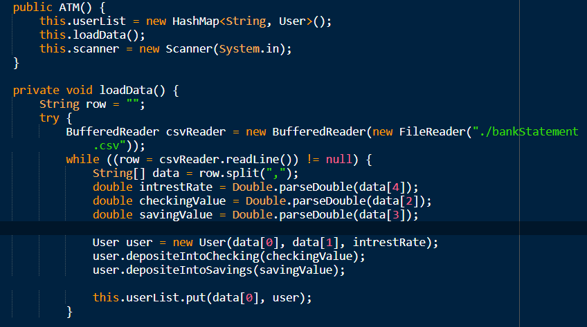

August, 2020 - December, 2020
PHP/Javascript/HTML/CSS
Worked with a group of three on a semester project that will be used by Indiana University - Purdue University
Indianapolis, It is a Project Judging System that can be used to help the committee of the school compitions or hackathons.
Our team used PHP for all the backend functionality of the web app and JavaScript, HTML/CSS for building the frontend.
June, 2020 - August, 2020

C#/.NETCORE/MICROSOFT AZURE
At this technical product pitch contest, our team of five presented an idea that would
potentially help people during the second wave or the covid-19 pandemic by creating a web app for
testing facilities and doctors to login or register and enter how many tested positive or negative per
testing center, And based on the data collected, it gets presented on a heat map designed specially for
Indiana counties. We were awarded a $2500 grant after developing a prototype for this idea.

PL/SQL
As a semester project in my Advanced database class, i have built a simulated
Bank database Using PL/SQL The PL language procces the Data and the SQL Holds all
the (tables,views..etc).

C++
Built a normalized student record system with OOP, Created a class to represent student data.
and a another to handle other specific types of data including dates and
addresses. the system will include all the necessary header files, cpp files, Makefile,
and a main program to incorporate the larger system.
Helped and shadowed software engineers in my church to build a data base to help and serve
the church members, recently contributed in designing a registering system for people to register
before attending any activities to maintain the capacity limits due to covid-19.

Java/Swing
Created Workout tracker GUI that will give a list of workouts that you can chose from
and let's you enter all the information of that spesific workout, then it will store it and create
a table in the GUI to show all the workout you have done and track it everytime you use the program.

Java
Built a simulated complete ATM system using OOP.